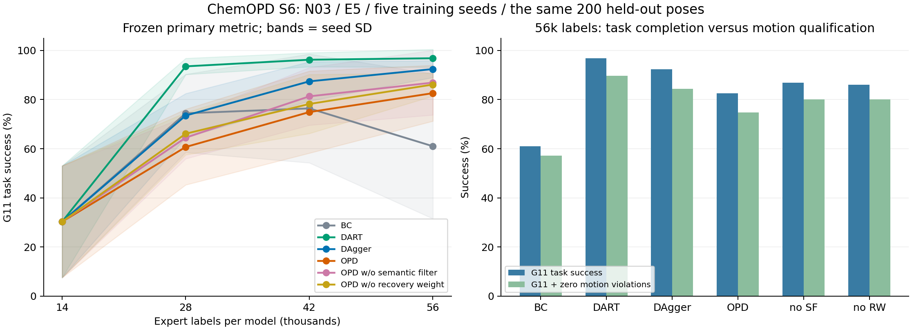

174 次仿真 · 95 次拟合 · 最终运行失败 0
CHEMOPD / N03 / CONTINUOUS E5 EXPERT
S6 完整对比
学生已经学会任务；OPD 的额外机制尚未带来优势。
这轮冻结实验包含 BC、DART、DAgger、OPD 与两项消融，使用相同网络、训练配方与每模型标签预算。五个训练种子共享同一组 200 个新测试位姿。只覆盖 N03 名义分布。
121 个真实末段观测点；冻结 G11 判据
已取回约 5.1 GB 原始证据和模型
本轮不支持“OPD 优于 DAgger 或 DART”。
56k 标签下：DART 96.8%，DAgger 92.4%，OPD 82.6%，BC 61.0%。五种子有较大差异，配对种子区间不能支持优势结论。去掉语义过滤或恢复加权后的均值也高于完整 OPD；应先诊断机制，而不是挑选最好种子。
任务完成时间：2026-10-25 19:03 UTC；结果恢复与验收：2026-10-26。旧证据与冻结基线保持独立。
02 / COMPLETE COMPARISON
56k 标签，五种子全部保留。
主指标使用预先冻结的 N03_success_g11_v1。均值旁为训练种子之间的样本标准差；不是 1,000 个独立任务的置信区间。
| 方法 | s31 | s32 | s33 | s34 | s35 | G11 均值 ± SD | G11 + 无运动越限 |
|---|---|---|---|---|---|---|---|
| BC | 111/200 | 167/200 | 147/200 | 161/200 | 24/200 | 61.0% ± 29.5 | 57.2% |
| DART | 194/200 | 199/200 | 196/200 | 181/200 | 198/200 | 96.8% ± 3.7 | 89.6% |
| DAgger | 190/200 | 174/200 | 186/200 | 191/200 | 183/200 | 92.4% ± 3.4 | 84.4% |
| OPD | 184/200 | 128/200 | 163/200 | 168/200 | 183/200 | 82.6% ± 11.4 | 74.8% |
| OPD w/o semantic filter | 193/200 | 128/200 | 182/200 | 189/200 | 177/200 | 86.9% ± 13.2 | 80.1% |
| OPD w/o recovery weight | 162/200 | 175/200 | 164/200 | 185/200 | 175/200 | 86.1% ± 4.7 | 80.1% |

逐种子 Wilson 95% 区间、条件于这 200 个测试位姿的种子 t 区间、配对差值、旧脚本判据与运动计数均在下载 JSON 中。原主指标未被改写。
03 / RAW EVIDENCE AUDIT
从原始数组复算，保持分母和失败记录。
完整性与评分
269 个任务标记、95 组日志汇总和逐实例结果一致。原始末段 121 点、120 个物理时间间隔均已检查；所有仿真的 G11 判定和四类运动计数完成 CPU 复算，未推进物理世界。
标签与机制
79 次完整采集共记录 1,106,000 次已查询训练标签；评测标签为 0。95 个拟合输入的准入与 1/2/5 权重已逐项复算。每模型累计标签为 14k / 28k / 42k / 56k，拒绝行仍计入预算。
56k 档的五个 OPD 模型合计包含 280,000 个累计输入行（含重复使用的共同初始示范）；拒绝 6,066 行，33,074 行采用 5 倍恢复权重。这是训练记录计数，不是额外的独立专家调用。
历史基础设施失败没有删除：总账本保留 280 次启动、279 次关闭；本次成功 driver 完成 269 项。之前 11 次额外启动的完整查询成本，仍需早期启动日志补证，不能默认为 0。云端 progress.json 最后停在 267 完成 / 2 运行；终态由最终账本、269 项标记和平台 SUCCEEDED 交叉确认，不改写旧快照。
04 / LIMITS AND NEXT CHECK
下一步是机制诊断，不是宣布方法完成。
N12、N17、N18、多任务蒸馏、扰动恢复、30 ms 延迟、同一实例第 1/2/3/5 次尝试的适应，都没有被本轮覆盖。S6 的阶段辅助头没有参与训练，对全部方法一致。去除恢复权重的消融仍保留失败权重 2；这与冻结方案一致。
恢复权重的含义需要更精确。
只读片段审计显示，33,074 个 5 倍权重行中，31,258 行（94.5%）所在区间到保存时域结束仍没有观察到 verifier 的重新抓稳、放置或释放端点。其余 1,816 行有端点，但端点也不等于完整任务成功。第一轮新数据的恢复权重份额为 68%–81%；这是权重总量占比，不是已测量的梯度贡献。
当前标签覆盖“失去抓持后的区间”，不能全部称为已验证的成功恢复。这个事后诊断支持下一轮区分未解决失败与已观察恢复；尚不能证明它导致了本轮性能下降。原训练标签和权重全部保留。
接下来用已取回的数据检查：语义过滤具体拒绝了什么状态，以及失败集中在最后放置还是释放。保留 S6 完整负结果，再冻结可区分机制的新实验；本页没有启动任何新算力任务。